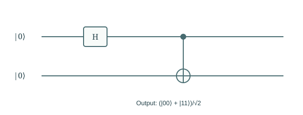
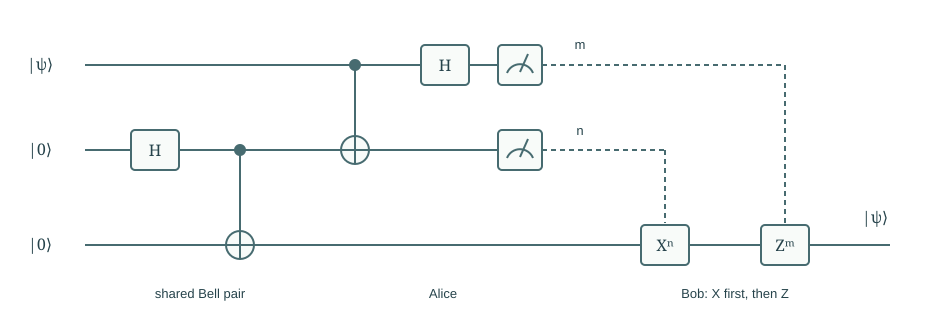

Chapter 05
Composite Systems and Entanglement
Can a whole have a definite quantum state when its parts have no individual pure states of their own?
Combining two systems first looks like an exercise in keeping track of coordinates. Tensor products soon reveal states that cannot be separated into a state for each part, and correlations that require us to reason about the whole. We follow those correlations through the limits on copying quantum states and communicating by local actions. Teleportation then brings the pieces together: transferring an unknown state requires entanglement, measurement, and an ordinary classical message.
In this chapter · 4 sections · 12 topics
5.1
Composite State Spaces
The coordinate for a joint outcome must retain both local labels.
5.1.1 Tensor products and product bases§
Two qubits have joint basis labels \(00,01,10,11\). Write \(\ket{ab}=\ket a\otimes\ket b\), using the tensor product. Coordinates are ordered here with the first qubit as the leftmost bit. For individual vectors \((a,b)^T\) and \((c,d)^T\), their tensor product is \((ac,ad,bc,bd)^T\). Every pair of local coordinates contributes one joint coordinate. Dimensions multiply rather than add. An operation on the first qubit alone is \(U\otimes I\); it acts on each pair of coefficients with the second label held fixed.
5.1.2 Product states§
Independent pure preparations give a product state \(\ket\psi\otimes\ket\phi\). The amplitude of a joint basis outcome is the product of the two local amplitudes, so its probability is the product of their probabilities. For example, \(\ket+\otimes\ket0=(\ket{00}+\ket{10})/\sqrt2\). Although two joint amplitudes are nonzero, the second qubit is certainly zero and the state factors. Superposition alone is not evidence of entanglement. The relevant question is whether one local vector for each subsystem reproduces every joint amplitude.
5.1.3 The composition postulate§
The composition postulate assigns the tensor-product space to a composite system. A register of \(n\) qubits therefore has \(2^n\) basis coordinates. This is a statement about the mathematical description, not a promise that a measurement yields \(2^n\) numbers. A basis measurement returns one \(n\)-bit label. Maintaining a general state vector on a classical simulator can be expensive, but that fact alone does not prove an algorithmic advantage. We must still identify a task and a process that makes the required information observable efficiently.
5.2
Entangled States
A two-gate preparation produces a state that no pair of local pure states can describe.
5.2.1 Bell-state preparation§
Prepare \(\ket{00}\), apply \(H\) to the first qubit, then CNOT with the first as control. The state changes as \[\ket{00}\to\frac{\ket{00}+\ket{10}}{\sqrt2}\to\frac{\ket{00}+\ket{11}}{\sqrt2}.\] The final vector is a Bell state, denoted \(\ket{\Phi^+}\). The circuit drawing records this sequence, with time running left to right. The vertical CNOT connector acts on the joint state; it does not mean that the first qubit was measured to decide a classical action on the second.

5.2.2 Nonfactorization of amplitudes§
If \(\ket{\Phi^+}\) factored as \((a\ket0+b\ket1)\otimes(c\ket0+d\ket1)\), its coefficients would require \(ac=bd=1/\sqrt2\) but \(ad=bc=0\). The first two equations make all four factors nonzero, contradicting the latter equations. The state is entangled. This elementary test establishes more than correlation in one chosen measurement: it rules out every product of pure local states. A classical mixture of \(00\) and \(11\) has the same zero–one counts, but different predictions in other bases.
5.2.3 Joint, marginal, and conditional probabilities§
For joint amplitudes \(\alpha_{ab}\), \(p(a,b)=|\alpha_{ab}|^2\). The marginal probability is \(p(a)=\sum_b p(a,b)\); when \(p(a)>0\), \(p(b\mid a)=p(a,b)/p(a)\). The Bell state gives \(p(00)=p(11)=1/2\) and equal local probabilities. It also equals \((\ket{++}+\ket{--})/\sqrt2\), so equal X-basis outcomes are certain. The classical mixture of \(00\) and \(11\) instead gives independent fair X outcomes. Correlation alone in one basis does not establish coherent entanglement; the measurement choice matters.
5.3
Quantum Information Constraints
The joint-state framework also constrains what can be copied and communicated.
5.3.1 Basis-state copying§
CNOT maps \(\ket0\ket0\) to \(\ket0\ket0\) and \(\ket1\ket0\) to \(\ket1\ket1\). Thus it copies a computational basis label into a blank target. On a superposition, linearity gives \(\alpha\ket{00}+\beta\ket{11}\), not \((\alpha\ket0+\beta\ket1)^{\otimes2}\). The latter generally contains cross terms \(\ket{01}\) and \(\ket{10}\). Keeping the label-copying calculation explicit prevents a misleading inference from two successful basis tests to copying arbitrary quantum information.
5.3.2 The no-cloning theorem§
Suppose one unitary copied every unknown pure state into a blank register. For two possible inputs, overlap preservation would require \[\braket\phi\psi=(\braket\phi\psi)^2.\] For distinct nonorthogonal states the overlap is neither zero nor one, so the equation fails. The contradiction excludes a universal cloner. A device designed for a known orthogonal set can copy its labels; preparing a known state repeatedly also poses no problem. The restriction is on perfectly copying an arbitrary unknown state by one fixed operation.
5.3.3 Local states and no-signalling§
A subsystem of an entangled pair need not have a pure-state vector. Its local predictions can be summarized by a density matrix; for either half of \(\ket{\Phi^+}\), it is \(I/2\). A local unitary or a measurement with its outcome ignored cannot change the other party’s marginal distribution. Conditioning on a communicated outcome can change the recipient’s description, but the information must arrive through a classical channel. This is why entanglement supplies correlations without an instantaneous signalling method. Appendix D gives the density-matrix calculation.
5.4
Quantum Teleportation
Teleportation combines entanglement, measurement, and classical control in one complete calculation.
5.4.1 Entanglement resources§
Alice holds an unknown qubit \(\ket\psi=\alpha\ket0+\beta\ket1\) and one half of a Bell pair; Bob holds the other half. The initial joint state is \(\ket\psi\otimes\ket{\Phi^+}\). Alice applies CNOT from the input to her Bell half, then H to the input. No quantum system carrying the input is then sent to Bob. The shared entanglement and two later classical bits are the resources. To see why the protocol works, we must track the complete state rather than assume the Bell pair already contains the answer.
5.4.2 Measurement and conditional corrections§
After Alice’s gates, the state is \[\frac12\sum_{m,n\in\{0,1\}}\ket{mn}\otimes X^nZ^m\ket\psi.\] Alice’s measurement gives each pair \((m,n)\) with probability one quarter. Bob’s conditional state is \(X^nZ^m\ket\psi\); applying \(Z^mX^n\) recovers \(\ket\psi\). In temporal order he applies \(X^n\) first, then \(Z^m\). The circuit uses dashed classical controls after measurement. The formula accounts for every outcome, so teleportation succeeds without selecting a favorable measurement result.

5.4.3 State transfer and classical communication§
Before the two classical bits arrive, averaging Bob’s four possible conditional states gives \(I/2\), independent of \(\psi\). He cannot extract a message about the input from that state alone. After correction, his qubit has the input state; Alice no longer retains that unknown state, and the original Bell pair has been consumed. Thus teleportation transfers quantum information without cloning it. It also illustrates a recurring discipline: distinguish a joint pure state, a state conditioned on a known result, and a local state when that result is unavailable.
Related appendix: Mixed states and general measurements.